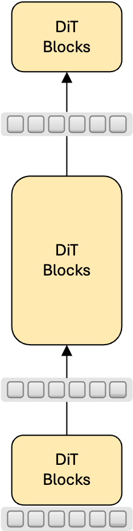
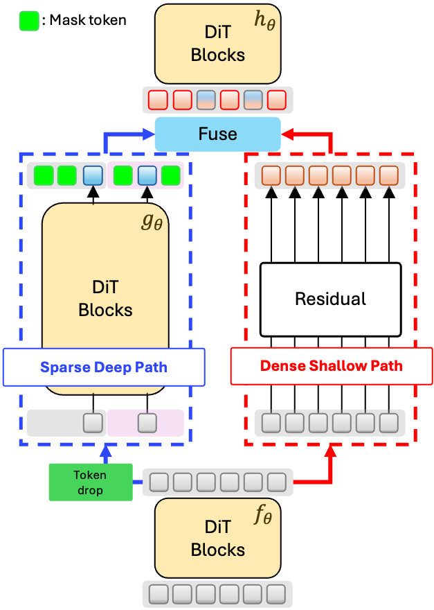

<!DOCTYPE html>
<html lang="en">

<head>
    <meta charset="UTF-8">
    <meta name="viewport" content="width=device-width, initial-scale=1.0">
    <title>SPRINT: Sparse-Dense Residual Fusion for Efficient Diffusion Transformers</title>

    <!-- React & ReactDOM -->
    <script crossorigin src="https://unpkg.com/react@18/umd/react.production.min.js"></script>
    <script crossorigin src="https://unpkg.com/react-dom@18/umd/react-dom.production.min.js"></script>

    <!-- Babel for JSX -->
    <script src="https://unpkg.com/@babel/standalone/babel.min.js"></script>

    <!-- Tailwind CSS -->
    <script src="https://cdn.tailwindcss.com"></script>

    <!-- Font Awesome -->
    <link rel="stylesheet" href="https://cdnjs.cloudflare.com/ajax/libs/font-awesome/6.4.0/css/all.min.css">

    <!-- Google Fonts: Space Grotesk (Primary) + JetBrains Mono (Code) -->
    <link
        href="https://fonts.googleapis.com/css2?family=Space+Grotesk:wght@300;400;500;600;700&family=JetBrains+Mono:wght@400;500&display=swap"
        rel="stylesheet">
    <link href="https://fonts.googleapis.com/css2?family=Cormorant+Garamond@400;500;600;700&display=swap" rel="stylesheet">
    <!-- Add to <head> -->
    <link href="https://cdn.jsdelivr.net/npm/geist@1.2.0/dist/fonts/geist-sans/style.min.css" rel="stylesheet">

    <script>
        tailwind.config = {
            theme: {
                extend: {
                    fontFamily: {
                        // Changed primary sans font to Space Grotesk
                        sans: ['Space Grotesk', 'sans-serif'],
                        display: ['Space Grotesk', 'sans-serif'],
                        mono: ['JetBrains Mono', 'monospace'],
                        bricolage: ['Bricolage Grotesque', 'sans-serif'],
                    },
                    colors: {
                        sprint: {
                            50: '#eff6ff',
                            100: '#dbeafe',
                            500: '#3b82f6',
                            600: '#2563eb',
                            glow: '#60a5fa',
                        }
                    },
                    animation: {
                        'pulse-slow': 'pulse 3s cubic-bezier(0.4, 0, 0.6, 1) infinite',
                        'float': 'float 6s ease-in-out infinite',
                    },
                    keyframes: {
                        float: {
                            '0%, 100%': { transform: 'translateY(0)' },
                            '50%': { transform: 'translateY(-10px)' },
                        }
                    }
                }
            }
        }
    </script>

    <style>
        body {
            background-color: #fafafa;
            color: #18181b;
            font-family: 'Space Grotesk', sans-serif;
            /* Enforce globally */
        }

        .glass-card {
            background: rgba(255, 255, 255, 0.8);
            backdrop-filter: blur(12px);
            border: 1px solid rgba(255, 255, 255, 0.5);
            box-shadow: 0 4px 6px -1px rgba(0, 0, 0, 0.05), 0 2px 4px -1px rgba(0, 0, 0, 0.03);
        }

        .grid-pattern {
            background-size: 40px 40px;
            background-image: linear-gradient(to right, rgba(0, 0, 0, 0.03) 1px, transparent 1px),
                linear-gradient(to bottom, rgba(0, 0, 0, 0.03) 1px, transparent 1px);
            mask-image: linear-gradient(to bottom, black 40%, transparent 100%);
        }

        /* Neon Glow Utilities */
        .glow-blue {
            box-shadow: 0 0 10px rgba(59, 130, 246, 0.5);
        }

        .glow-orange {
            box-shadow: 0 0 10px rgba(249, 115, 22, 0.5);
        }

        .glow-green {
            box-shadow: 0 0 10px rgba(34, 197, 94, 0.5);
        }

        .circuit-line {
            stroke-dasharray: 10;
            stroke-dashoffset: 10;
            animation: dash 1s linear forwards;
        }

        @keyframes dash {
            to {
                stroke-dashoffset: 0;
            }
        }
    </style>
</head>

<body class="antialiased">
    <div id="root"></div>

    <script type="text/babel">
        const { useState, useEffect } = React;

        // --- Visual Components ---

        const Badge = ({ children, color = "blue" }) => {
            const colors = {
                blue: "bg-blue-50 text-blue-700 border-blue-100",
                green: "bg-emerald-50 text-emerald-700 border-emerald-100",
                orange: "bg-orange-50 text-orange-700 border-orange-100"
            };
            return (
                <span className={`px-3 py-1 rounded-full text-[15px] font-bold uppercase tracking-wider border ${colors[color]}`}>
                    {children}
                </span>
            );
        };

        const Chip = ({ label, active, size = "md", className }) => (
            <div className={`
                transition-all duration-500 border flex items-center justify-center font-bold text-slate-600 shadow-sm
                ${size === "sm" ? "w-28 h-10 rounded-lg text-xs" : "w-40 h-48 rounded-xl text-sm flex-col"}
                ${active ? "bg-white border-blue-200 shadow-md scale-105 ring-1 ring-blue-100" : "bg-slate-50 border-slate-200 opacity-80"}
                ${className}
            `}>
                {label}
            </div>
        );


// --- Table of Contents Component ---
        const TableOfContents = () => {
            const [activeSection, setActiveSection] = useState('hero');

            const sections = [
                { id: 'hero', label: 'Overview', icon: 'fa-house' },
                { id: 'performance', label: 'Highlights', icon: 'fa-bolt' },
                { id: 'results', label: 'Results', icon: 'fa-table' },
                { id: 'architecture', label: 'Method', icon: 'fa-cubes' },
                { id: 'training', label: 'Training', icon: 'fa-chart-line' },
                { id: 'inference', label: 'Inference', icon: 'fa-gauge-high' },
                { id: 'citation', label: 'Citation', icon: 'fa-quote-left' },
            ];

            useEffect(() => {
                const handleScroll = () => {
                    const scrollPosition = window.scrollY + 150;

                    for (let i = sections.length - 1; i >= 0; i--) {
                        const section = document.getElementById(sections[i].id);
                        if (section && section.offsetTop <= scrollPosition) {
                            setActiveSection(sections[i].id);
                            break;
                        }
                    }
                };

                window.addEventListener('scroll', handleScroll);
                return () => window.removeEventListener('scroll', handleScroll);
            }, []);

            const scrollToSection = (id) => {
                const element = document.getElementById(id);
                if (element) {
                    element.scrollIntoView({ behavior: 'smooth' });
                }
            };

            return (
                <nav className="fixed left-4 top-1/2 -translate-y-1/2 z-50 hidden lg:block">
                    <div className="bg-slate-900/90 backdrop-blur-xl rounded-2xl border border-white/10 shadow-2xl overflow-hidden">
                        <div className="p-2 space-y-1">
                            {sections.map((section) => (
                                <button
                                    key={section.id}
                                    onClick={() => scrollToSection(section.id)}
                                    className={`w-full flex items-center gap-3 px-3 py-2.5 rounded-xl transition-all duration-200 ${
                                        activeSection === section.id
                                            ? 'bg-yellow-400 text-black'
                                            : 'text-slate-400 hover:text-white hover:bg-white/10'
                                    }`}
                                >
                                    <i className={`fa-solid ${section.icon} w-5 text-center flex-shrink-0 ${
                                        activeSection === section.id ? 'text-black' : ''
                                    }`}></i>
                                    <span className="text-sm font-medium whitespace-nowrap">
                                        {section.label}
                                    </span>
                                </button>
                            ))}
                        </div>
                    </div>
                </nav>
            );
        };

        const Hero = () => (
            <header id="hero" className="relative pt-28 pb-4 overflow-hidden bg-gradient-to-b from-black via-slate-950 to-black">
                {/* Elegant gradient orbs for depth */}
                <div className="absolute top-0 left-1/4 w-96 h-96 bg-gradient-to-br from-yellow-500/10 to-transparent rounded-full blur-3xl -z-10"></div>
                <div className="absolute bottom-0 right-1/4 w-80 h-80 bg-gradient-to-tl from-blue-500/10 to-transparent rounded-full blur-3xl -z-10"></div>
                <div className="absolute inset-0 grid-pattern -z-10 opacity-10"></div>

                <div className="max-w-7xl mx-auto px-6">
                    {/* Full-width centered content */}
                    <div className="text-center z-10 mb-7">

                        <p className="text-3xl lg:text-5xl text-slate-200 font-light mb-4 leading-snug max-w-5xl mx-auto"
                            style={{ fontFamily: 'Space Grotesk' }}>
                            SPRINT: Sparse-Dense Residual Fusion for <br className="hidden sm:block" />
                            <span className="font-semibold" style={{ color: '#FFFC00' }}>Efficient Diffusion Transformers</span>
                        </p>

                        {/* Authors */}
                        <div className="text-xl text-slate-400 mb-4 space-y-0.2">
                            <p>Dogyun Park<sup>1,3</sup>, Moayed Haji-Ali<sup>1</sup>, Yanyu Li<sup>1</sup>, Willi Menapace<sup>1</sup>,</p>
                            <p>Sergey Tulyakov<sup>1</sup>, Hyunwoo J. Kim<sup>2</sup>, Aliaksandr Siarohin<sup>1</sup>, Anil Kag<sup>1</sup></p>
                            <p className="text-base opacity-80 pt-2 flex items-center justify-center gap-4 flex-wrap">
                                <span className="flex items-center gap-1.5">
                                    
                                    Snap Inc.<sup>1</sup>
                                </span>
                                <span className="text-slate-500">·</span>
                                <span className="flex items-center gap-1.5">
                                    
                                    Korea University<sup>2</sup>
                                </span>
                                <span className="text-slate-500">·</span>
                                <span className="flex items-center gap-1.5">
                                    
                                    KAIST<sup>3</sup>
                                </span>
                            </p>
                        </div>

                        <div className="flex flex-col sm:flex-row gap-3 justify-center">
                            <a href="https://arxiv.org/pdf/2510.21986" className="bg-yellow-400 text-black px-7 py-3.5 rounded-2xl font-bold hover:bg-yellow-300 transition-all hover:scale-105 hover:shadow-xl hover:shadow-yellow-500/20 flex items-center justify-center gap-3">
                                <i className="fa-solid fa-file-pdf"></i> Read Paper
                            </a>
                            <a href="https://github.com/snap-research/Sprint" className="bg-white/10 backdrop-blur-sm text-white border border-white/20 px-7 py-3.5 rounded-2xl font-bold hover:bg-white/20 transition-all hover:border-white/40 flex items-center justify-center gap-3">
                                <i className="fa-brands fa-github"></i> View Code
                            </a>
                        </div>
                    </div>

                    {/* Abstract Card */}
                    <div className="max-w-6xl mx-auto p-8 rounded-3xl border border-white/10 shadow-2xl backdrop-blur-xl bg-white/5">
                        <h3 className="text-xl font-bold text-slate-500 uppercase tracking-widest mb-3">Abstract</h3>
                        <p className="text-slate-300 text-base leading-relaxed text-justify font-medium"
                            style={{ fontFamily: 'JetBrains Mono' }}>
                            We introduce <strong className="text-white">SPRINT</strong>, <em>Sparse-Dense Residual Fusion for Efficient Diffusion Transformers</em>, a simple method that enables aggressive token dropping (up to 75%) while preserving quality.
                            SPRINT leverages the complementary roles of shallow and deep layers: early layers process all tokens to capture local detail, deeper layers operate on a sparse subset to cut computation, and their outputs are fused through residual connections.
                            Training follows a two-stage schedule: long masked pre-training for efficiency followed by short full-token fine-tuning.
                            On ImageNet-1K 256<sup>2</sup>, SPRINT achieves <strong className="text-white">9.8x</strong> training savings with comparable FID/FDD, and at inference, its <strong className="text-white">Path-Drop Guidance (PDG)</strong> nearly halves FLOPs while improving quality.
                        </p>
                    </div>
                </div>

                </header>
        );


        // --- Quantitative Comparison Component (Slider) ---
        const QuantitativeComparison = () => {
            const iterSteps = [1, 50, 100, 150, 200, 250, 300, 350, 400];
            const [stepIndex, setStepIndex] = useState(0);
            const [isPlaying, setIsPlaying] = useState(false);
            const maxIters = 100;

            const currentIter = iterSteps[stepIndex];

            // Image paths for each iteration step
            // Format: assets/figures/training/{method}_{iteration}k.png
            const ditImages = iterSteps.map(iter => `assets/training/dit-${iter}000-nocfg.jpg`);
            const sprintImages = iterSteps.map(iter => `assets/training/sprint-${iter}000-nocfg.jpg`);

            // Simulated Cost Logic (scaled to 200K max)
            const costDiT = (currentIter / maxIters) * 6.11;
            const costSprint = (currentIter / maxIters) * 2.17;

            // Auto-play effect
            useEffect(() => {
                if (!isPlaying) return;

                const interval = setInterval(() => {
                    setStepIndex(prev => {
                        if (prev >= iterSteps.length - 1) {
                            return 0; // Loop back to start
                        }
                        return prev + 1;
                    });
                }, 1500); // 1.5 seconds per step

                return () => clearInterval(interval);
            }, [isPlaying]);

            // Synchronized magnifying lens state (using relative percentage position)
            const [lens, setLens] = useState({ show: false, xPercent: 0, yPercent: 0 });
            const ditImgRef = React.useRef(null);
            const sprintImgRef = React.useRef(null);

            const handleMouseMove = (e, ref) => {
                if (!ref.current) return;
                const rect = ref.current.getBoundingClientRect();
                const x = e.clientX - rect.left;
                const y = e.clientY - rect.top;
                setLens({
                    show: true,
                    xPercent: (x / rect.width) * 100,
                    yPercent: (y / rect.height) * 100
                });
            };

            const handleMouseLeave = () => {
                setLens({ show: false, xPercent: 0, yPercent: 0 });
            };

            // Helper to get pixel position from percentage
            const getLensPos = (ref) => {
                if (!ref.current) return { x: 0, y: 0 };
                return {
                    x: (lens.xPercent / 100) * ref.current.offsetWidth,
                    y: (lens.yPercent / 100) * ref.current.offsetHeight
                };
            };

            return (
                <section id="training" className="py-10 relative" style={{ backgroundColor: '#000000' }}>
                    <div className="max-w-7xl mx-auto px-6">
                        <div className="text-justify mb-5">
                            <Badge color="green">Training Improvement</Badge>
                            <h2 className="text-2xl lg:text-4xl font-bold mt-4 mb-2 text-white">Faster Convergence, Cheaper Training</h2>
                            <p className="text-slate-100 max-w-7xl ml-auto font-light text-lg text-justify">
                                SPRINT achieves better generation quality with significantly faster and cheaper training than the baseline <br />by dropping majority of the tokens in the deep layers. <br />
                            </p>
                        </div>

                        <div className="text-slate-100 text-base font-light text-left mb-4 text-center">
                            ImageNet 256x256 @ guidance scale = 1.0 <br />
                            <span className="text-cyan-400 text-sm">Drag the slider to compare generation quality over training time. Hover over the images to see the details.</span>
                        </div>


                        {/* Control Panel */}
                        <div className="bg-white/10 backdrop-blur-md p-6 rounded-2xl border border-white/10 mb-8 max-w-7xl mx-auto">
                            <div className="flex justify-between items-center text-sm font-bold text-slate-400 mb-4">
                                <span className="text-yellow-400 text-xl">{currentIter}K Iterations</span>
                                <button
                                    onClick={() => setIsPlaying(!isPlaying)}
                                    className={`px-4 py-2 rounded-lg font-bold text-sm flex items-center gap-2 transition-all ${
                                        isPlaying
                                            ? 'bg-yellow-400 text-black hover:bg-yellow-300'
                                            : 'bg-white/10 text-white hover:bg-white/20 border border-white/20'
                                    }`}
                                >
                                    <i className={`fa-solid ${isPlaying ? 'fa-pause' : 'fa-play'}`}></i>
                                    {isPlaying ? 'Pause' : 'Auto Play'}
                                </button>
                            </div>
                            <input
                                type="range"
                                min="0"
                                max={iterSteps.length - 1}
                                step="1"
                                value={stepIndex}
                                onChange={(e) => {
                                    setStepIndex(parseInt(e.target.value));
                                    setIsPlaying(false); // Stop auto-play when manually dragging
                                }}
                                className="w-full h-3 bg-slate-700 rounded-lg appearance-none cursor-pointer accent-yellow-400 hover:accent-yellow-300 transition-all"
                            />
                            {/* Step labels */}
                            <div className="flex justify-between mt-2 text-xs text-slate-500">
                                {iterSteps.map((step, i) => (
                                    <span key={i} className={stepIndex === i ? 'text-yellow-400 font-bold' : ''}>{step}K</span>
                                ))}
                            </div>
                        </div>

                        <div className="grid md:grid-cols-2 gap-8 max-w-7xl mx-auto">
                            {/* Standard DiT */}
                            <div className="flex flex-col items-center">
                                <div className="w-full bg-white/5 p-4 rounded-xl border border-white/10">
                                    <div className="flex justify-between text-xs font-bold text-slate-500 mb-1 uppercase tracking-wider">
                                        <span>Accumulated Training Cost</span>
                                    </div>
                                    <div className="text-2xl font-bold text-slate-300 font-mono mb-2">{costDiT.toFixed(1)} <span className="text-sm text-slate-500">TFLOPs</span></div>
                                    <div className="h-2 bg-slate-700 rounded-full overflow-hidden">
                                        <div className="h-full bg-slate-500 transition-all duration-300" style={{ width: `${(costDiT / 24.44) * 100}%` }}></div>
                                    </div>
                                </div>
                                <div
                                    ref={ditImgRef}
                                    className="relative w-full aspect-square bg-slate-800 rounded-2xl shadow-lg border border-white/10 mb-4 group cursor-crosshair"
                                    onMouseMove={(e) => handleMouseMove(e, ditImgRef)}
                                    onMouseLeave={handleMouseLeave}
                                >
                                    {/* Image wrapper with overflow-hidden for rounded corners */}
                                    <div className="absolute inset-0 rounded-2xl overflow-hidden">
                                        <div className="absolute top-4 left-4 bg-white/10 backdrop-blur-md text-white px-3 py-1 rounded-lg text-xs font-bold uppercase tracking-wider z-10">
                                            Standard DiT
                                        </div>
                                        
                                    </div>
                                    {/* Magnifying Lens for DiT - outside overflow-hidden */}
                                    {lens.show && (
                                        <div
                                            className="absolute w-96 h-96 rounded-full border-4 border-white/80 shadow-2xl pointer-events-none z-20 overflow-hidden"
                                            style={{
                                                left: getLensPos(ditImgRef).x - 192,
                                                top: getLensPos(ditImgRef).y - 192,
                                            }}
                                        >
                                            <div
                                                className="absolute inset-0 bg-cover bg-no-repeat"
                                                style={{
                                                    backgroundImage: `url(${ditImages[stepIndex]})`,
                                                    backgroundSize: '500%',
                                                    backgroundPosition: `${lens.xPercent}% ${lens.yPercent}%`
                                                }}
                                            />
                                        </div>
                                    )}
                                </div>


                            </div>

                            {/* SPRINT */}
                            <div className="flex flex-col items-center">
                                <div className="w-full bg-yellow-400/10 p-4 rounded-xl border border-yellow-400/20">
                                    <div className="flex justify-between text-xs font-bold text-yellow-500 mb-1 uppercase tracking-wider">
                                        <span>Accumulated Training Cost</span>
                                    </div>
                                    <div className="text-2xl font-bold text-yellow-400 font-mono mb-2">{costSprint.toFixed(1)} <span className="text-sm text-yellow-500/70">TFLOPs</span></div>
                                    <div className="h-2 bg-yellow-900/30 rounded-full overflow-hidden relative">
                                        <div className="h-full bg-yellow-400 transition-all duration-300" style={{ width: `${(costSprint / 24.44) * 100}%` }}></div>
                                    </div>
                                </div>
                                <div
                                    ref={sprintImgRef}
                                    className="relative w-full aspect-square bg-slate-800 rounded-2xl shadow-xl border border-yellow-400/30 ring-1 ring-yellow-400/20 mb-4 group cursor-crosshair"
                                    onMouseMove={(e) => handleMouseMove(e, sprintImgRef)}
                                    onMouseLeave={handleMouseLeave}
                                >
                                    {/* Image wrapper with overflow-hidden for rounded corners */}
                                    <div className="absolute inset-0 rounded-2xl overflow-hidden">
                                        <div className="absolute top-4 left-4 bg-yellow-400 text-black px-3 py-1 rounded-lg text-xs font-bold uppercase tracking-wider shadow-sm z-10">
                                            SPRINT (Ours)
                                        </div>
                                        
                                    </div>
                                    {/* Magnifying Lens for SPRINT - outside overflow-hidden */}
                                    {lens.show && (
                                        <div
                                            className="absolute w-96 h-96 rounded-full border-4 border-yellow-400/90 shadow-2xl pointer-events-none z-20 overflow-hidden"
                                            style={{
                                                left: getLensPos(sprintImgRef).x - 192,
                                                top: getLensPos(sprintImgRef).y - 192,
                                            }}
                                        >
                                            <div
                                                className="absolute inset-0 bg-cover bg-no-repeat"
                                                style={{
                                                    backgroundImage: `url(${sprintImages[stepIndex]})`,
                                                    backgroundSize: '500%',
                                                    backgroundPosition: `${lens.xPercent}% ${lens.yPercent}%`
                                                }}
                                            />
                                        </div>
                                    )}
                                </div>


                            </div>
                        </div>
                    </div>
                </section>
            );
        };

        // 2. Architecture Visualizer
        const ArchitectureDemo = () => {
            return (
                <section id="architecture" className="py-16 relative" style={{ backgroundColor: '#000000' }}>
                    <div className="absolute top-1/3 right-0 w-96 h-96 bg-yellow-500/10 rounded-full blur-3xl"></div>
                    <div className="absolute bottom-1/3 left-0 w-96 h-96 bg-blue-500/10 rounded-full blur-3xl"></div>

                    <div className="max-w-7xl mx-auto px-6 relative z-10">
                        {/* Horizontal Layout: Text Left, Figures Right */}
                        <div className="grid lg:grid-cols-2 gap-12 items-center">
                            {/* Left: Text Content */}
                            <div>
                                <Badge color="orange">Method</Badge>
                                <h2 className="text-2xl lg:text-3xl font-bold text-white mt-4 mb-6">Bottleneck of Standard DiT</h2>
                                <p className="text-slate-300 text-lg leading-relaxed mb-6 text-justify">
                                    DiT uses a homogeneous architecture where every layer, from shallow to deep, processes the full set of dense tokens.
                                    This is inefficient: in deeper layers, token representations become redundant as features shift from local to global semantics.
                                    Training deep layers on all tokens thus wastes compute, spending a large portion of the FLOP budget on fine-grained details that contribute little to modeling global structure.
                                </p>
                                <h2 className="text-2xl lg:text-3xl font-bold text-white mt-4 mb-6">Sparse-Dense Residual Fusion</h2>
                                <p className="text-slate-300 text-lg leading-relaxed mb-6 text-left">
                                    We address this by introducing <strong className="text-yellow-400">architectural specialization</strong>:
                                    <ul className="list-disc list-inside">
                                        <li> <strong className="text-white">Early layers</strong> process <strong className="text-yellow-400">dense tokens</strong> to capture local evidence under noisy input and build a rich foundation of features.</li>
                                        <li> <strong className="text-white">Deeper layers</strong> operate on a <strong className="text-yellow-400">sparse subset</strong> of tokens to model global semantic relationships efficiently.</li>
                                        <li> <strong className="text-white">Final layers</strong> reintroduce <strong className="text-yellow-400">dense tokens</strong> for dense prediction by residual connections between dense and sparse tokens.</li>
                                    </ul>
                                </p>
                            </div>

                            {/* Right: Architecture Cards */}
                            <div className="grid grid-cols-2 gap-6">
                                {/* --- VANILLA DIT --- */}
                                <div className="bg-white/5 rounded-2xl overflow-hidden border border-white/10 p-4">
                                    <div className="flex items-center justify-between mb-3">
                                        <h3 className="font-bold text-sm text-slate-400">Vanilla DiT</h3>
                                        <span className="text-xs text-slate-500">Baseline</span>
                                    </div>
                                    <div className="aspect-[2/3] rounded-xl flex items-center justify-center overflow-hidden" style={{ backgroundColor: '#FFFFFF' }}>
                                        
                                    </div>
                                </div>

                                {/* --- SPRINT (OURS) --- */}
                                <div className="bg-yellow-400/10 rounded-2xl overflow-hidden border border-yellow-400/20 p-4">
                                    <div className="flex items-center justify-between mb-3">
                                        <h3 className="font-bold text-sm text-yellow-400">SPRINT</h3>
                                        <span className="text-xs bg-yellow-400 text-black px-2 py-0.5 rounded font-bold">OURS</span>
                                    </div>
                                    <div className="aspect-[2/3] rounded-xl flex items-center justify-center border border-yellow-400/20 ring-1 ring-yellow-400/10 overflow-hidden" style={{ backgroundColor: '#FFFFFF' }}>
                                        
                                    </div>
                                </div>
                            </div>
                        </div>

                        <div className="h-px bg-white/20 my-2 mx-auto w-full max-w-7xl"></div>


                        {/* Horizontal Layout */}
                        <div className="grid lg:grid-cols-2 gap-12 items-center">
                            {/* Left: Text Content */}
                            <div>
                                <h2 className="text-2xl lg:text-3xl font-bold text-white mt-4 mb-6">Efficient Path-Drop Guidance</h2>

                                <p className="text-slate-300 text-lg leading-relaxed mb-6 text-justify">
                                    <strong className="text-white">SPRINT's dual-path design</strong> also enables efficient guidance during inference.
                                    Standard Classifier-Free Guidance (CFG) doubles sampling cost by requiring two forward passes per step: one conditional and one unconditional. <br />
                                    Auto Guidance paper shows that the unconditional pass can be replaced by a weaker network. The SPRINT architecture inherently contains a natural weaker network: the dense shallow path that bypasses the deep middle blocks. <br />
                                    We therefore introduce <strong className="text-yellow-400">Path-Drop Guidance (PDG)</strong>:
                                    <ul className="list-disc list-inside text-left">
                                        <li> For the conditional estimate, we perform a full forward pass.</li>
                                        <li> For the unconditional estimate, we bypass middle blocks entirely, replacing it with [MASK] tokens.</li>
                                    </ul>
                                </p>

                                {/* Bullet Points */}
                                <div className="space-y-1">
                                    <div className="flex gap-4 items-start">
                                        <div className="w-8 h-8 rounded-lg bg-red-500/20 flex items-center justify-center flex-shrink-0 mt-1">
                                            <i className="fa-solid fa-xmark text-red-400 text-sm"></i>
                                        </div>
                                        <div>
                                            <div className="text-white font-bold">Standard CFG Problem</div>
                                            <div className="text-slate-400 text-sm">Requires 2 full forward passes per step: conditional + unconditional</div>
                                        </div>
                                    </div>

                                    <div className="flex gap-4 items-start">
                                        <div className="w-8 h-8 rounded-lg bg-yellow-500/20 flex items-center justify-center flex-shrink-0 mt-1">
                                            <i className="fa-solid fa-lightbulb text-yellow-400 text-sm"></i>
                                        </div>
                                        <div>
                                            <div className="text-white font-bold">Key Insight</div>
                                            <div className="text-slate-400 text-sm">SPRINT's shallow path is a natural "weaker network" for unconditional estimation</div>
                                        </div>
                                    </div>

                                    <div className="flex gap-4 items-start">
                                        <div className="w-8 h-8 rounded-lg bg-emerald-500/20 flex items-center justify-center flex-shrink-0 mt-1">
                                            <i className="fa-solid fa-check text-emerald-400 text-sm"></i>
                                        </div>
                                        <div>
                                            <div className="text-white font-bold">PDG Solution</div>
                                            <div className="text-slate-400 text-sm">Conditional: full pass | Unconditional: bypass deep blocks with [MASK] tokens</div>
                                        </div>
                                    </div>

                                    <div className="flex gap-4 items-start">
                                        <div className="w-8 h-8 rounded-lg bg-blue-500/20 flex items-center justify-center flex-shrink-0 mt-1">
                                            <i className="fa-solid fa-bolt text-blue-400 text-sm"></i>
                                        </div>
                                        <div>
                                            <div className="text-white font-bold">Result</div>
                                            <div className="text-slate-400 text-sm">~42% FLOP reduction while maintaining quality</div>
                                        </div>
                                    </div>
                                </div>
                            </div>

                            {/* Right: Visualization */}
                            <div className="space-y-6">
                                {/* Standard CFG */}
                                <div className="bg-white/5 rounded-2xl p-6 border border-white/10">
                                    <div className="flex items-center justify-between mb-4">
                                        <span className="text-slate-400 font-bold text-sm uppercase tracking-wider">Standard CFG</span>
                                        <span className="text-red-400 text-xs font-bold">2× Cost</span>
                                    </div>

                                    {/* Pass 1 */}
                                    <div className="mb-3">
                                        <div className="text-xs text-slate-500 mb-2">Conditional Pass (Full)</div>
                                        <div className="flex items-center gap-2">
                                            <div className="flex-1 h-10 bg-blue-500/30 rounded-lg flex items-center justify-center text-xs font-bold text-blue-300 border border-blue-500/30">
                                                f(x,c) → Encoder
                                            </div>
                                            <i className="fa-solid fa-arrow-right text-slate-600"></i>
                                            <div className="flex-1 h-10 bg-purple-500/30 rounded-lg flex items-center justify-center text-xs font-bold text-purple-300 border border-purple-500/30">
                                                g(·) → Middle
                                            </div>
                                            <i className="fa-solid fa-arrow-right text-slate-600"></i>
                                            <div className="flex-1 h-10 bg-emerald-500/30 rounded-lg flex items-center justify-center text-xs font-bold text-emerald-300 border border-emerald-500/30">
                                                h(·) → Decoder
                                            </div>
                                        </div>
                                    </div>

                                    {/* Pass 2 */}
                                    <div>
                                        <div className="text-xs text-slate-500 mb-2">Unconditional Pass (Full)</div>
                                        <div className="flex items-center gap-2">
                                            <div className="flex-1 h-10 bg-blue-500/30 rounded-lg flex items-center justify-center text-xs font-bold text-blue-300 border border-blue-500/30">
                                                f(x,∅) → Encoder
                                            </div>
                                            <i className="fa-solid fa-arrow-right text-slate-600"></i>
                                            <div className="flex-1 h-10 bg-purple-500/30 rounded-lg flex items-center justify-center text-xs font-bold text-purple-300 border border-purple-500/30">
                                                g(·) → Middle
                                            </div>
                                            <i className="fa-solid fa-arrow-right text-slate-600"></i>
                                            <div className="flex-1 h-10 bg-emerald-500/30 rounded-lg flex items-center justify-center text-xs font-bold text-emerald-300 border border-emerald-500/30">
                                                h(·) → Decoder
                                            </div>
                                        </div>
                                    </div>
                                </div>

                                {/* PDG */}
                                <div className="bg-yellow-400/10 rounded-2xl p-6 border border-yellow-400/20">
                                    <div className="flex items-center justify-between mb-4">
                                        <span className="text-yellow-400 font-bold text-sm uppercase tracking-wider">Path-Drop Guidance (Ours)</span>
                                        <span className="text-emerald-400 text-xs font-bold">nearly 1× Cost</span>
                                    </div>

                                    {/* Pass 1 - Full */}
                                    <div className="mb-3">
                                        <div className="text-xs text-yellow-500/70 mb-2">Conditional Pass (Full)</div>
                                        <div className="flex items-center gap-2">
                                            <div className="flex-1 h-10 bg-blue-500/30 rounded-lg flex items-center justify-center text-xs font-bold text-blue-300 border border-blue-500/30">
                                                f(x,c) → Encoder
                                            </div>
                                            <i className="fa-solid fa-arrow-right text-slate-600"></i>
                                            <div className="flex-1 h-10 bg-purple-500/30 rounded-lg flex items-center justify-center text-xs font-bold text-purple-300 border border-purple-500/30">
                                                g(·) → Middle
                                            </div>
                                            <i className="fa-solid fa-arrow-right text-slate-600"></i>
                                            <div className="flex-1 h-10 bg-emerald-500/30 rounded-lg flex items-center justify-center text-xs font-bold text-emerald-300 border border-emerald-500/30">
                                                h(·) → Decoder
                                            </div>
                                        </div>
                                    </div>

                                    {/* Pass 2 - Lightweight */}
                                    <div>
                                        <div className="text-xs text-yellow-500/70 mb-2">Unconditional Pass (Lightweight)</div>
                                        <div className="flex items-center gap-2">
                                            <div className="flex-1 h-10 bg-blue-500/30 rounded-lg flex items-center justify-center text-xs font-bold text-blue-300 border border-blue-500/30">
                                                f(x,c) → Encoder
                                            </div>


                                            <i className="fa-solid fa-arrow-right text-slate-600 px-24"></i>
                                            <div className="flex-1 h-10 bg-emerald-500/30 rounded-lg flex items-center justify-center text-xs font-bold text-emerald-300 border border-emerald-500/30">
                                                h(·) → Decoder
                                            </div>
                                        </div>
                                    </div>
                                </div>

                                {/* Savings Callout */}
                                <div className="flex items-center justify-center gap-4 p-4 bg-emerald-500/10 rounded-xl border border-emerald-500/20">
                                    <i className="fa-solid fa-arrow-trend-down text-emerald-400 text-xl"></i>
                                    <div className="text-center">
                                        <div className="text-emerald-400 font-bold text-lg">Deep middle blocks executed only once</div>
                                        <div className="text-slate-400 text-sm">Nearly halves FLOPs and latency per step</div>
                                    </div>
                                </div>
                            </div>
                        </div>
                    </div>

                </section>
            );
        };

        // --- Efficiency Graph Component ---
        const EfficiencyGraph = () => {
            const dataPoints = [
                { label: "SPRINT+REPA (Ours)", x: 66.7, y: 54.7, type: 'ours_repa' },
                { label: "SPRINT+REPA (Ours)", x: 44.3, y: 57.1, type: 'ours_repa' },
                { label: "SPRINT (Ours)", x: 65.1, y: 58.4, type: 'ours' },
                { label: "SPRINT (Ours)", x: 43.7, y: 63.1, type: 'ours' },
                { label: "SiT+REPA", x: 248.6, y: 72.5, type: 'baseline' },
                { label: "MDTv2", x: 258.3, y: 77.3, type: 'baseline' },
                { label: "SiT", x: 427.7, y: 78.5, type: 'baseline' },
                { label: "DiT", x: 427.7, y: 79.5, type: 'baseline' },
                { label: "MaskDiT", x: 253.6, y: 82.6, type: 'baseline' },
                { label: "MicroDiT", x: 65.5, y: 86.5, type: 'baseline' },
                { label: "Progressive Training", x: 34.4, y: 110.1, type: 'baseline' },
                { label: "TREADS", x: 146.2, y: 83.4, type: 'baseline' },
            ];

            const [hovered, setHovered] = useState(null);
            const width = 1200, height = 700, padding = 90, paddingTop = 70;
            const xMax = 450, yMax = 130, yMin = 40;
            const scaleX = (val) => padding + (val / xMax) * (width - 2 * padding);
            const scaleY = (val) => height - padding - ((val - yMin) / (yMax - yMin)) * (height - 2 * padding);

            return (
                <section id="performance" className="py-16 relative overflow-hidden" style={{ backgroundColor: '#000000' }}>
                    <div className="max-w-7xl mx-auto px-6 relative z-10">
                        {/* Horizontal Layout: Highlights Left, Graph Right */}
                        <div className="grid lg:grid-cols-3 gap-10 items-center">
                            {/* Left: Key Highlights */}
                            <div className="lg:col-span-1">

                                <h2 className="text-2xl lg:text-3xl font-bold text-yellow-400 mt-0 mb-6">Key Highlights</h2>

                                <div className="space-y-5">
                                    <div className="flex items-center gap-4 p-4 rounded-xl bg-white/5 border border-white/10">
                                        <div className="w-12 h-12 rounded-xl bg-yellow-400 flex items-center justify-center flex-shrink-0">
                                            <i className="fa-solid fa-check text-black text-lg"></i>
                                        </div>
                                        <div>
                                            <div className="text-white font-bold text-lg">75% Token Drop</div>
                                            <div className="text-slate-400 text-sm">Stable Diffusion Transformer Training</div>
                                        </div>
                                    </div>

                                    <div className="flex items-center gap-4 p-4 rounded-xl bg-white/5 border border-white/10">
                                        <div className="w-12 h-12 rounded-xl bg-blue-500 flex items-center justify-center flex-shrink-0">
                                            <i className="fa-solid fa-bolt text-white text-lg"></i>
                                        </div>
                                        <div>
                                            <div className="text-white font-bold text-lg">9.8× Speedup</div>
                                            <div className="text-slate-400 text-sm">Improved Training Efficiency</div>
                                        </div>
                                    </div>

                                    <div className="flex items-center gap-4 p-4 rounded-xl bg-white/5 border border-white/10">
                                        <div className="w-12 h-12 rounded-xl bg-emerald-500 flex items-center justify-center flex-shrink-0">
                                            <i className="fa-solid fa-gauge-high text-white text-lg"></i>
                                        </div>
                                        <div>
                                            <div className="text-white font-bold text-lg">2× Faster</div>
                                            <div className="text-slate-400 text-sm">Inference Speed</div>
                                        </div>
                                    </div>

                                    <div className="flex items-center gap-4 p-4 rounded-xl bg-white/5 border border-white/10">
                                        <div className="w-12 h-12 rounded-xl bg-purple-500 flex items-center justify-center flex-shrink-0">
                                            <i className="fa-solid fa-expand text-white text-lg"></i>
                                        </div>
                                        <div>
                                            <div className="text-white font-bold text-lg">Generalizable</div>
                                            <div className="text-slate-400 text-sm">Applicable to Any DiT</div>
                                        </div>
                                    </div>
                                </div>


                            </div>

                            {/* Right: Graph */}
                            <div className="lg:col-span-2">
                            <div className="bg-white/5 p-4 rounded-2xl border border-white/10 relative overflow-hidden">
                                {/* Legend */}
                                <div className="flex flex-wrap gap-3 mt-2 justify-center">
                                    <div className="flex items-center gap-2 px-3 py-1.5 rounded-full bg-white/5 border border-emerald-500/30">
                                        <div className="w-2.5 h-2.5 rounded-full bg-emerald-500"></div>
                                        <span className="font-bold text-emerald-400 text-xs">SPRINT + REPA</span>
                                    </div>
                                    <div className="flex items-center gap-2 px-3 py-1.5 rounded-full bg-white/5 border border-yellow-400/30">
                                        <div className="w-2.5 h-2.5 rounded-full bg-yellow-400"></div>
                                        <span className="font-bold text-yellow-400 text-xs">SPRINT</span>
                                    </div>
                                    <div className="flex items-center gap-2 px-3 py-1.5 rounded-full bg-white/5 border border-white/10">
                                        <div className="w-2.5 h-2.5 rounded-full bg-slate-500"></div>
                                        <span className="text-slate-500 text-xs">Baselines</span>
                                    </div>
                                </div>
                                <div className="mt-1">
                                <svg viewBox={`0 ${paddingTop} ${width} ${height - paddingTop}`} className="w-full h-full overflow-visible font-sans">
                                    <defs>
                                        <radialGradient id="highlightGradient" cx="0.5" cy="0.5" r="0.5"><stop offset="0%" stopColor="#facc15" stopOpacity="0.15" /><stop offset="100%" stopColor="#facc15" stopOpacity="0" /></radialGradient>
                                    </defs>
                                    <circle cx={scaleX(55)} cy={scaleY(58)} r={200} fill="url(#highlightGradient)" className="animate-pulse-slow" />

                                    <path d={`M ${scaleX(5)} ${scaleY(82)} Q ${scaleX(100)} ${scaleY(78)} ${scaleX(200)} ${scaleY(40)}`} fill="none" stroke="#475569" strokeWidth="2" strokeDasharray="8 6" strokeLinecap="round" />
                                    <text x={scaleX(80)} y={scaleY(78)} fill="#64748b" fontSize="15" fontWeight="500" fontStyle="italic" transform={`rotate(25, ${scaleX(70)}, ${scaleY(74)})`}>Efficiency Frontier</text>

                                    {[0, 100, 200, 300, 400].map(t => <g key={t}><line x1={scaleX(t)} y1={padding} x2={scaleX(t)} y2={height - padding} stroke="#1e293b" strokeWidth="2" /><text x={scaleX(t)} y={height - padding + 40} textAnchor="middle" fill="#64748b" fontSize="20" fontWeight="600">{t}G</text></g>)}
                                    {[50, 70, 90, 110, 130].map(t => <g key={t}><line x1={padding} y1={scaleY(t)} x2={width - padding} y2={scaleY(t)} stroke="#1e293b" strokeWidth="2" /><text x={padding - 25} y={scaleY(t) + 6} textAnchor="end" fill="#64748b" fontSize="20" fontWeight="600">{t}</text></g>)}

                                    <text x={width / 2} y={height - 15} textAnchor="middle" fill="#94a3b8" fontSize="25" fontWeight="700">Training TFLOPs</text>
                                    <text x={25} y={height / 2} textAnchor="middle" fill="#94a3b8" fontSize="25" fontWeight="700" transform={`rotate(-90, 25, ${height / 2})`}>FDD (Lower is Better ↓)</text>

                                    {dataPoints.map((point, i) => {
                                        const cx = scaleX(point.x);
                                        const cy = scaleY(point.y);
                                        const isOurs = point.type === 'ours';
                                        const isOursRepa = point.type === 'ours_repa';
                                        const isHighlight = isOurs || isOursRepa;

                                        let fill = '#64748b';
                                        let radius = 9;
                                        let labelColor = '#94a3b8';
                                        let labelWeight = '500';

                                        const isBottomLabel = point.label === "SiT" || point.label.includes("REPA");
                                        const labelY = isBottomLabel ? cy + radius + 22 : cy - (radius) - 3;

                                        if (point.label.includes('SiT') || point.label.includes('DiT')) {
                                            fill = '#94a3b8';
                                            radius = 11;
                                            labelColor = '#cbd5e1';
                                            labelWeight = '700';
                                        }

                                        if (isOurs) {
                                            fill = '#facc15';
                                            radius = 16;
                                            labelColor = '#facc15';
                                            labelWeight = '800';
                                        }
                                        if (isOursRepa) {
                                            fill = '#10b981';
                                            radius = 18;
                                            labelColor = '#10b981';
                                            labelWeight = '800';
                                        }

                                        const isHovered = hovered === point;

                                        return (
                                            <g key={i}
                                                onMouseEnter={() => setHovered(point)}
                                                onMouseLeave={() => setHovered(null)}
                                                className="cursor-pointer"
                                                style={{
                                                    transformOrigin: `${cx}px ${cy}px`,
                                                    transition: 'all 0.3s cubic-bezier(0.175, 0.885, 0.32, 1.275)'
                                                }}
                                            >
                                                {isHighlight && (
                                                    <circle cx={cx} cy={cy} r={radius * 3} fill={fill} opacity={0.15} className="animate-pulse" />
                                                )}
                                                <circle
                                                    cx={cx} cy={cy} r={isHovered ? radius * 1.3 : radius}
                                                    fill={fill}
                                                    stroke="#000" strokeWidth={2}
                                                    className="transition-all duration-300"
                                                />
                                                <text
                                                    x={cx + 5}
                                                    y={labelY}
                                                    textAnchor="start"
                                                    fill={labelColor}
                                                    fontSize={isHighlight ? "18" : "16"}
                                                    fontWeight={labelWeight}
                                                    className="pointer-events-none"
                                                >
                                                    {point.label.replace(' (Ours)', '')}
                                                </text>
                                            </g>
                                        );
                                    })}
                                    {hovered && (
                                        <g transform={`translate(${scaleX(hovered.x)}, ${scaleY(hovered.y) - 30})`} className="pointer-events-none z-50">
                                            <path d="M 0 0 L -12 -18 L -110 -18 Q -120 -18 -120 -28 L -120 -88 Q -120 -98 -110 -98 L 110 -98 Q 120 -98 120 -88 L 120 -28 Q 120 -18 110 -18 L 12 -18 Z" fill="#1e293b" opacity="0.95" />
                                            <text x="0" y="-65" textAnchor="middle" fill="white" fontSize="16" fontWeight="bold">{hovered.label}</text>
                                            <text x="0" y="-40" textAnchor="middle" fill="#94a3b8" fontSize="14" fontWeight="500">FLOPs: {hovered.x}G | FDD: {hovered.y}</text>
                                        </g>
                                    )}
                                </svg>
                                </div>
                            </div>
                        </div>
                        </div>
                    </div>
                </section>
            );
        };

        // --- Inference Demo (PDG) ---
        const InferenceDemo = () => {
            // Gallery images - replace with your actual image paths
            const galleryImages = [
                { cfg: 'assets/inference/cfg_1.jpg', pdg: 'assets/inference/pdg_1.jpg'},
                { cfg: 'assets/inference/cfg_2.jpg', pdg: 'assets/inference/pdg_2.jpg'},
                { cfg: 'assets/inference/cfg_3.jpg', pdg: 'assets/inference/pdg_3.jpg'},
                { cfg: 'assets/inference/cfg_4.jpg', pdg: 'assets/inference/pdg_4.jpg'},
                { cfg: 'assets/inference/cfg_5.jpg', pdg: 'assets/inference/pdg_5.jpg'},
                { cfg: 'assets/inference/cfg_6.jpg', pdg: 'assets/inference/pdg_6.jpg'},
                { cfg: 'assets/inference/cfg_7.jpg', pdg: 'assets/inference/pdg_7.jpg'},
                { cfg: 'assets/inference/cfg_8.jpg', pdg: 'assets/inference/pdg_8.jpg'},
            ];

            const [activeIndex, setActiveIndex] = useState(0);
            const [isPlaying, setIsPlaying] = useState(false);

            // Auto-play effect
            useEffect(() => {
                if (!isPlaying) return;

                const interval = setInterval(() => {
                    setActiveIndex(prev => {
                        if (prev >= galleryImages.length - 1) {
                            return 0; // Loop back to start
                        }
                        return prev + 1;
                    });
                }, 2000); // 2 seconds per image

                return () => clearInterval(interval);
            }, [isPlaying]);

            // Synchronized magnifying lens state
            const [lens, setLens] = useState({ show: false, xPercent: 0, yPercent: 0 });
            const cfgImgRef = React.useRef(null);
            const pdgImgRef = React.useRef(null);

            const handleMouseMove = (e, ref) => {
                if (!ref.current) return;
                const rect = ref.current.getBoundingClientRect();
                const x = e.clientX - rect.left;
                const y = e.clientY - rect.top;
                setLens({
                    show: true,
                    xPercent: (x / rect.width) * 100,
                    yPercent: (y / rect.height) * 100
                });
            };

            const handleMouseLeave = () => {
                setLens({ show: false, xPercent: 0, yPercent: 0 });
            };

            const getLensPos = (ref) => {
                if (!ref.current) return { x: 0, y: 0 };
                return {
                    x: (lens.xPercent / 100) * ref.current.offsetWidth,
                    y: (lens.yPercent / 100) * ref.current.offsetHeight
                };
            };

            return (
                <section id="inference" className="py-10 relative" style={{ backgroundColor: '#000000' }}>
                    <div className="max-w-7xl mx-auto px-6">
                        <div className="text-justify mb-6">
                            <Badge color="green">Inference Improvement</Badge>
                            <h2 className="text-2xl lg:text-4xl font-bold text-white mt-4 mb-2">Faster Inference, Better Quality</h2>
                            <p className="text-slate-300 text-lg text-justify">
                                PDG uses a lightweight unconditional pass, reducing inference compute by ~42% compared to standard CFG.<br />
                                Surprisingly, PDG <strong className="text-white">even improves quality</strong> compared to standard CFG.<br />

                            </p>
                        </div>

                        {/* Gallery Controls */}
                        <div className="flex justify-center items-center gap-6 mb-6">
                            {/* Play/Pause Button */}
                            <button
                                onClick={() => setIsPlaying(!isPlaying)}
                                className={`px-4 py-2 rounded-lg font-bold text-sm flex items-center gap-2 transition-all ${
                                    isPlaying
                                        ? 'bg-yellow-400 text-black hover:bg-yellow-300'
                                        : 'bg-white/10 text-white hover:bg-white/20 border border-white/20'
                                }`}
                            >
                                <i className={`fa-solid ${isPlaying ? 'fa-pause' : 'fa-play'}`}></i>
                                {isPlaying ? 'Pause' : 'Auto Play'}
                            </button>

                            {/* Gallery Dots */}
                            <div className="flex gap-4">
                                {galleryImages.map((_, idx) => (
                                    <button
                                        key={idx}
                                        onClick={() => {
                                            setActiveIndex(idx);
                                            setIsPlaying(false); // Stop auto-play when manually selecting
                                        }}
                                        className={`w-4 h-4 rounded-full transition-all ${activeIndex === idx ? 'bg-yellow-400 scale-125' : 'bg-white/30 hover:bg-white/50'}`}
                                    />
                                ))}
                            </div>
                        </div>
                        <div className="text-slate-300 text-lg text-center mb-3">
                            ImageNet 512x512 @ guidance scale = 3.0 <br />
                            Uncurated samples generated by <strong className="text-white">standard CFG</strong> and <strong className="text-white">PDG</strong>, respectively.<br />
                            <span className="text-cyan-400 text-sm">Hover over the images to inspect fine-grained details like textures and edges.</span>
                        </div>

                        {/* Comparison Grid */}
                        <div className="grid md:grid-cols-2 gap-6 max-w-7xl mx-auto">
                            {/* CFG */}
                            <div className="bg-white/5 rounded-xl p-4 border border-white/10">
                                <div className="flex justify-between items-center mb-3">
                                    <span className="text-lg font-bold text-slate-400">CFG</span>
                                    <span className="text-xs text-slate-500">2× forward passes</span>
                                </div>
                                <div
                                    ref={cfgImgRef}
                                    className="relative aspect-square bg-slate-900 rounded-lg cursor-crosshair"
                                    onMouseMove={(e) => handleMouseMove(e, cfgImgRef)}
                                    onMouseLeave={handleMouseLeave}
                                >
                                    {/* Image wrapper with overflow-hidden for rounded corners */}
                                    <div className="absolute inset-0 rounded-lg overflow-hidden">
                                        
                                    </div>
                                    {/* Magnifying Lens for CFG - outside overflow-hidden */}
                                    {lens.show && (
                                        <div
                                            className="absolute w-96 h-96 rounded-full border-4 border-white/80 shadow-2xl pointer-events-none z-20 overflow-hidden"
                                            style={{
                                                left: getLensPos(cfgImgRef).x - 192,
                                                top: getLensPos(cfgImgRef).y - 192,
                                            }}
                                        >
                                            <div
                                                className="absolute inset-0 bg-cover bg-no-repeat"
                                                style={{
                                                    backgroundImage: `url(${galleryImages[activeIndex].cfg})`,
                                                    backgroundSize: '500%',
                                                    backgroundPosition: `${lens.xPercent}% ${lens.yPercent}%`
                                                }}
                                            />
                                        </div>
                                    )}
                                </div>
                            </div>

                            {/* PDG */}
                            <div className="bg-yellow-400/10 rounded-xl p-4 border border-yellow-400/20">
                                <div className="flex justify-between items-center mb-3">
                                    <span className="text-lg font-bold text-yellow-400">PDG (Ours)</span>
                                    <span className="text-xs text-yellow-500">1.75× faster</span>
                                </div>
                                <div
                                    ref={pdgImgRef}
                                    className="relative aspect-square bg-slate-900 rounded-lg ring-1 ring-yellow-400/30 cursor-crosshair"
                                    onMouseMove={(e) => handleMouseMove(e, pdgImgRef)}
                                    onMouseLeave={handleMouseLeave}
                                >
                                    {/* Image wrapper with overflow-hidden for rounded corners */}
                                    <div className="absolute inset-0 rounded-lg overflow-hidden">
                                        
                                    </div>
                                    {/* Magnifying Lens for PDG - outside overflow-hidden */}
                                    {lens.show && (
                                        <div
                                            className="absolute w-96 h-96 rounded-full border-4 border-yellow-400/90 shadow-2xl pointer-events-none z-20 overflow-hidden"
                                            style={{
                                                left: getLensPos(pdgImgRef).x - 192,
                                                top: getLensPos(pdgImgRef).y - 192,
                                            }}
                                        >
                                            <div
                                                className="absolute inset-0 bg-cover bg-no-repeat"
                                                style={{
                                                    backgroundImage: `url(${galleryImages[activeIndex].pdg})`,
                                                    backgroundSize: '500%',
                                                    backgroundPosition: `${lens.xPercent}% ${lens.yPercent}%`
                                                }}
                                            />
                                        </div>
                                    )}
                                </div>
                            </div>
                        </div>


                    </div>
                </section>
            );
        };

        // --- Qualitative Results Component (New) ---
        const QualitativeResults = () => {
            const [activeTab, setActiveTab] = useState(0);
            const [lensPos, setLensPos] = useState({ x: 0, y: 0, show: false });
            const imageRef = React.useRef(null);

            // Simulated data using the composite image provided
            const samples = [
                { name: 'Hammerhead Shark', pos: '0% 0%' },
                { name: 'Magpie', pos: '20% 0%' },
                { name: 'Bullfrog', pos: '40% 0%' },
                { name: 'Tusker', pos: '60% 0%' },
                { name: 'Beagle', pos: '80% 0%' },
            ];

            const handleMouseMove = (e) => {
                if (!imageRef.current) return;
                const { left, top, width, height } = imageRef.current.getBoundingClientRect();
                const x = e.clientX - left;
                const y = e.clientY - top;

                // Check boundaries
                if (x < 0 || y < 0 || x > width || y > height) {
                    setLensPos(prev => ({ ...prev, show: false }));
                    return;
                }

                setLensPos({ x, y, show: true });
            };

            return (
                <section id="gallery" className="py-24 bg-white relative">
                    <div className="max-w-6xl mx-auto px-6">
                        <div className="text-center mb-16">
                            <Badge color="blue">Gallery</Badge>
                            <h2 className="text-4xl font-bold mt-4 mb-6">High-Fidelity Generation</h2>
                            <p className="text-slate-600 max-w-2xl mx-auto font-light text-lg">
                                Explore samples generated by SPRINT. Hover over the images to inspect fine-grained details like textures and edges, which are preserved by our dense residual path.
                            </p>
                        </div>

                        <div className="glass-card p-8 rounded-3xl shadow-2xl border border-slate-200/60">
                            {/* Tabs */}
                            <div className="flex flex-wrap justify-center gap-4 mb-8">
                                {samples.map((sample, idx) => (
                                    <button
                                        key={idx}
                                        onClick={() => setActiveTab(idx)}
                                        className={`px-6 py-2 rounded-full text-sm font-bold transition-all duration-300 ${
                                            activeTab === idx
                                            ? 'bg-slate-900 text-white shadow-lg scale-105'
                                            : 'bg-slate-100 text-slate-500 hover:bg-slate-200'
                                        }`}
                                    >
                                        {sample.name}
                                    </button>
                                ))}
                            </div>

                            {/* Image Container */}
                            <div
                                className="relative w-full aspect-[16/9] bg-slate-100 rounded-2xl overflow-hidden cursor-crosshair shadow-inner border border-slate-200 group"
                                onMouseMove={handleMouseMove}
                                onMouseLeave={() => setLensPos(prev => ({ ...prev, show: false }))}
                                ref={imageRef}
                            >
                                {/* Base Image (Simulated Crop) */}
                                <div
                                    className="absolute inset-0 bg-cover bg-no-repeat transition-all duration-500"
                                    style={{
                                        backgroundImage: 'url(assets/figures/qual_result.png)',
                                        backgroundPosition: samples[activeTab].pos,
                                        backgroundSize: '500% 100%' // Assuming the strip is 5 images wide
                                    }}
                                ></div>

                                {/* Overlay Text hint */}
                                <div className={`absolute inset-0 flex items-center justify-center pointer-events-none transition-opacity duration-300 ${lensPos.show ? 'opacity-0' : 'opacity-100'}`}>
                                    <span className="bg-black/50 backdrop-blur-md text-white px-4 py-2 rounded-full text-sm font-medium border border-white/20">
                                        <i className="fa-solid fa-magnifying-glass mr-2"></i> Hover to Magnify
                                    </span>
                                </div>

                                {/* Magnifying Lens */}
                                {lensPos.show && (
                                    <div
                                        className="absolute w-48 h-48 rounded-full border-4 border-white/90 shadow-2xl pointer-events-none z-10 overflow-hidden"
                                        style={{
                                            left: lensPos.x - 96,
                                            top: lensPos.y - 96,
                                            backgroundImage: 'url(assets/figures/qual_result.png)',
                                            backgroundPosition: samples[activeTab].pos, // In a real implementation, this would need complex math to map the zoom relative to the cursor on the full sheet
                                            // For this demo, we'll use a simpler zoom effect on the *current view*
                                            backgroundSize: '1000% 200%', // 2x zoom relative to base
                                            // Calculate specialized background position for zoom
                                            // This part is tricky without individual images, so simplifying for demo robustness:
                                            backgroundColor: '#fff'
                                        }}
                                    >
                                        {/* Actual Zoom Implementation for single image or sprite */}
                                        <div
                                            className="absolute inset-0 bg-cover bg-no-repeat"
                                            style={{
                                                backgroundImage: 'url(assets/figures/qual_result.png)',
                                                backgroundSize: '1500% 300%', // Zoom level
                                                backgroundPosition: `${(activeTab * 25) - (lensPos.x / imageRef.current?.offsetWidth * 25)}% ${50 - (lensPos.y / imageRef.current?.offsetHeight * 50)}%`
                                                // Note: The above math is a placeholder approximation for sprite zooming.
                                                // In a real deployment with separate images, it would be:
                                                // backgroundPosition: `${(lensPos.x / width) * 100}% ${(lensPos.y / height) * 100}%`
                                            }}
                                        />
                                    </div>
                                )}
                            </div>

                            <div className="mt-6 flex justify-between items-end">
                                <div>
                                    <h3 className="text-xl font-bold text-slate-900">{samples[activeTab].name}</h3>
                                    <p className="text-slate-500 text-sm mt-1">Generated with SPRINT + PDG (50 Steps)</p>
                                </div>
                                <div className="text-right">
                                    <div className="text-xs font-bold text-slate-400 uppercase tracking-wider mb-1">FID Score</div>
                                    <div className="text-2xl font-bold text-slate-800">2.04</div>
                                </div>
                            </div>
                        </div>
                    </div>
                </section>
            );
        };

        // --- Results Table ---
        const ResultsTable = () => {
            return (
                <section id="results" className="py-2 relative" style={{ backgroundColor: '#000000' }}>
                    <div className="max-w-7xl mx-auto px-6">
                        <div className="text-justify mb-2">
                            <h2 className="text-2xl lg:text-4xl font-bold text-white mt-0 mb-6">System-Level Comparison on ImageNet 256x256</h2>
                            <p className="text-white text-lg text-justify">Our method achieves very strong FDD and FID scores for only 400 training epochs with significantly lower training FLOPs compared to Baselines. <br /><span className="text-slate-100 text-sm">GS indicates Guidance Scheduling.</span></p>
                        </div>

                        <div className="overflow-x-auto rounded-2xl border border-white/10 shadow-2xl">
                            <table className="w-full text-base text-left text-slate-300">
                                <thead className="text-sm text-slate-400 uppercase bg-white/5 border-b border-white/10">
                                    <tr>
                                        <th className="bg-white/20 px-6 py-4 font-bold">Method</th>
                                        <th className="bg-white/20 px-6 py-4">Epochs</th>
                                        <th className="bg-white/20 px-6 py-4">Training TFLOPs</th>
                                        <th className="bg-white/20 px-6 py-4">Inference TFLOPs</th>
                                        <th className="bg-white/20 px-6 py-4">FDD ↓</th>
                                        <th className="bg-white/20 px-6 py-4">FID ↓</th>
                                    </tr>
                                </thead>
                                <tbody>
                                    <tr className="bg-white/5 border-b border-white/10 hover:bg-white/10">
                                        <td className="px-6 py-4 font-medium text-slate-200">SiT-XL (Baseline, <span className="text-red-300 font-bold">official ckpt</span>)</td>
                                        <td className="px-6 py-4">1400</td>
                                        <td className="px-6 py-4">427.7</td>
                                        <td className="px-6 py-4">0.475</td>
                                        <td className="px-6 py-4">78.5</td>
                                        <td className="px-6 py-4">2.06</td>
                                    </tr>
                                    <tr className="bg-white/5 border-b border-white/10 hover:bg-white/10">
                                        <td className="px-6 py-4 font-medium text-slate-200">SiT-XL (Baseline, <span className="text-green-300 font-bold">reproduced</span>)</td>
                                        <td className="px-6 py-4">400</td>
                                        <td className="px-6 py-4">122.2</td>
                                        <td className="px-6 py-4">0.474</td>
                                        <td className="px-6 py-4">79.5</td>
                                        <td className="px-6 py-4">2.04</td>
                                    </tr>
                                    <tr className="bg-yellow-400/10 border-b border-yellow-400/20 hover:bg-yellow-400/20">
                                        <td className="px-6 py-4 font-bold text-yellow-400">SiT-XL + SPRINT (Ours)</td>
                                        <td className="px-6 py-4 text-slate-200">400</td>
                                        <td className="px-6 py-4 text-cyan-400 font-bold">65.1 (↓47%)</td>
                                        <td className="px-6 py-4 text-slate-200">0.477</td>
                                        <td className="px-6 py-4 text-white font-bold">75.4</td>
                                        <td className="px-6 py-4 text-white font-bold">1.96</td>
                                    </tr>
                                    <tr className="bg-yellow-400/15 border-b border-yellow-400/20 hover:bg-yellow-400/25">
                                        <td className="px-6 py-4 font-bold text-yellow-400">SiT-XL + SPRINT + PDG (Ours)</td>
                                        <td className="px-6 py-4 text-slate-200">400</td>
                                        <td className="px-6 py-4 text-cyan-400 font-bold">65.1 (↓47%)</td>
                                        <td className="px-6 py-4 text-white font-bold">0.274 (↓42%)</td>
                                        <td className="px-6 py-4 text-white font-bold">58.4</td>
                                        <td className="px-6 py-4 text-white font-bold">1.62</td>
                                    </tr>
                                    <tr className="bg-yellow-400/20 border-b border-yellow-400/20 hover:bg-yellow-400/25">
                                        <td className="px-6 py-4 font-bold text-yellow-400">SiT-XL + SPRINT + PDG + GS (Ours)</td>
                                        <td className="px-6 py-4 text-slate-200">400</td>
                                        <td className="px-6 py-4 text-cyan-400 font-bold">65.1 (↓47%)</td>
                                        <td className="px-6 py-4 text-cyan-400 font-bold">0.263 (↓43%)</td>
                                        <td className="px-6 py-4 text-cyan-400 font-bold">54.9</td>
                                        <td className="px-6 py-4 text-cyan-400 font-bold">1.55</td>
                                    </tr>
                                    <tr className="h-5"></tr>
                                    <tr className="bg-white/5 border-b border-white/10 hover:bg-white/10">
                                        <td className="px-6 py-4 font-medium text-slate-200">SiT-XL + REPA (Baseline, <span className="text-red-300 font-bold">official ckpt</span>)</td>
                                        <td className="px-6 py-4">800</td>
                                        <td className="px-6 py-4">248.6</td>
                                        <td className="px-6 py-4">0.475</td>
                                        <td className="px-6 py-4">72.5</td>
                                        <td className="px-6 py-4">1.80</td>
                                    </tr>
                                    <tr className="bg-white/5 border-b border-white/10 hover:bg-white/10">
                                        <td className="px-6 py-4 font-medium text-slate-200">SiT-XL + REPA (Baseline, <span className="text-green-300 font-bold">reproduced</span>)</td>
                                        <td className="px-6 py-4">200</td>
                                        <td className="px-6 py-4">62.1</td>
                                        <td className="px-6 py-4">0.474</td>
                                        <td className="px-6 py-4">78.8</td>
                                        <td className="px-6 py-4">1.93</td>
                                    </tr>
                                    <tr className="bg-yellow-400/15 hover:bg-yellow-400/30">
                                        <td className="px-6 py-4 font-bold text-yellow-300">SiT-XL + REPA + SPRINT + PDG (Ours)</td>
                                        <td className="px-6 py-4 text-slate-200">400</td>
                                        <td className="px-6 py-4 font-bold text-slate-200">66.7</td>
                                        <td className="px-6 py-4 font-bold text-slate-200">0.274 (↓42%)</td>
                                        <td className="px-6 py-4 font-bold text-white">54.7</td>
                                        <td className="px-6 py-4 font-bold text-white">1.59</td>
                                    </tr>
                                    <tr className="bg-yellow-400/20 hover:bg-yellow-400/30">
                                        <td className="px-6 py-4 font-bold text-yellow-300">SiT-XL + REPA + SPRINT + PDG + GS (Ours)</td>
                                        <td className="px-6 py-4 text-slate-200">400</td>
                                        <td className="px-6 py-4 font-bold text-white">66.7</td>
                                        <td className="px-6 py-4 font-bold text-cyan-400">0.263 (↓43%)</td>
                                        <td className="px-6 py-4 font-bold text-cyan-400">49.6</td>
                                        <td className="px-6 py-4 font-bold text-cyan-400">1.49</td>
                                    </tr>
                                </tbody>
                            </table>
                        </div>
                    </div>
                </section>
            );
        };

        const Citation = () => (
            <section id="citation" className="py-16 bg-slate-50 " style={{ backgroundColor: '#000000' }}>
                <div className="max-w-5xl mx-auto px-6">
                    <h3 className="text-white text-2xl lg:text-3xl font-bold mb-4">Citation</h3>
                    <div className="bg-slate-900 text-slate-300 p-6 rounded-2xl font-mono text-sm overflow-x-auto shadow-inner">
                        <pre>{`@article{park2025sprint,
  title={Sprint: Sparse-Dense Residual Fusion for Efficient Diffusion Transformers},
  author={Park, Dogyun and Haji-Ali, Moayed and Li, Yanyu and Menapace, Willi and Tulyakov, Sergey
          and Kim, Hyunwoo J and Siarohin, Aliaksandr and Kag, Anil},
  journal={arXiv preprint arXiv:2510.21986},
  year={2025}
}`}</pre>
                    </div>
                </div>
            </section>
        );

        // Main App
        const App = () => (
            <div className="min-h-screen flex flex-col font-sans text-slate-900" style={{ backgroundColor: '#000000' }}>
                <TableOfContents />
                <Hero />
                <EfficiencyGraph />
                <ResultsTable />
                <div className="h-px bg-white/20 my-8 mx-auto w-full max-w-7xl"></div>
                <ArchitectureDemo />
                <div className="h-px bg-white/20 my-8 mx-auto w-full max-w-7xl"></div>
                <QuantitativeComparison /> {/* Added Here */}
                <InferenceDemo />
                <div className="h-px bg-white/20 my-8 mx-auto w-full max-w-7xl"></div>
                <Citation />

                <footer className="py-2 text-center text-slate-500 text-sm" style={{ backgroundColor: '#000000' }}>
                    <div className="max-w-4xl mx-auto px-6">
                        <p className="mb-6 font-medium">Copyright © 2025 Dogyun Park. All rights reserved.</p>
                    </div>
                </footer>
            </div>
        );

        const root = ReactDOM.createRoot(document.getElementById('root'));
        root.render(<App />);
    </script>
</body>

</html>